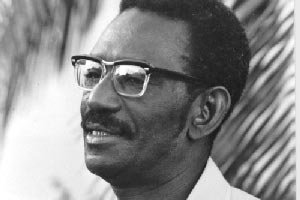

Cheikh Anta Diop
1923 - 1986
L'une des scientifiques les plus repandu d'Afrique
Cheikh Anta Diop (né le 29 décembre 1923 à Thieytou - mort le 7 février 1986 à Dakar) est un scientifique de formation, historien, anthropologue, chimiste, homme politique sénégalais. Il s'est attaché sa vie durant à montrer l'apport de l'Afrique et en particulier de l'Afrique noire à la culture et à la civilisation mondiale.
Ses thèses restent aujourd'hui controversées et sont peu reprises au sein de la communauté scientifique1,2,3, en particulier au sujet de l'Égypte antique et de l'origine de la langue wolof4.
Cheikh Anta Diop a cependant été un précurseur dans sa volonté d'écrire l'histoire africaine précédant la colonisation.

Le portrait le plus connu de Cheikh Anta Diop.
La liste des certains oeuvre de cheikh Anta Diop
- 1954 - Nations nègres et culture : de l'Antiquité nègre égyptienne aux problèmes culturels de l'Afrique noire d'aujourd'hui
- 1959 - L'Unité culturelle de l'Afrique noire
- 1960 - Les Fondements culturels, techniques et industriels d'un futur État fédéral d'Afrique noire
- 1967 - Antériorité des civilisations nègres : mythe ou vérité historique ?, Paris, Présence Africaine
- 1977 - Parenté génétique de l'égyptien pharaonique et des langues négro-africaines, Dakar-Abidjan, Nouvelles éditions africaines
- 1981 - Civilisation ou Barbarie, Paris, Présence africaine
- 1981 - Nouvelles recherches sur l'égyptien ancien et les langues africaines modernes, Paris, Présence africaine
En savoir plus sur Cheikh Anta Diop Wikipedia.